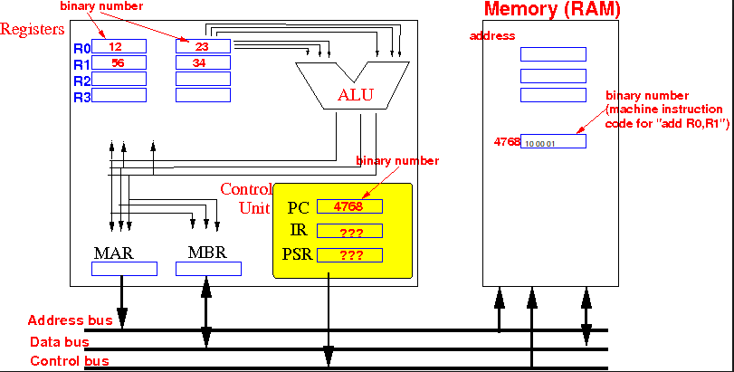
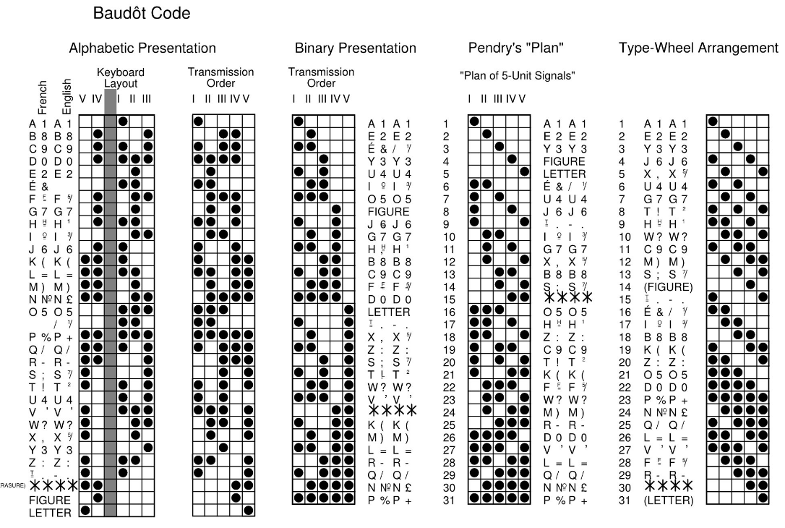
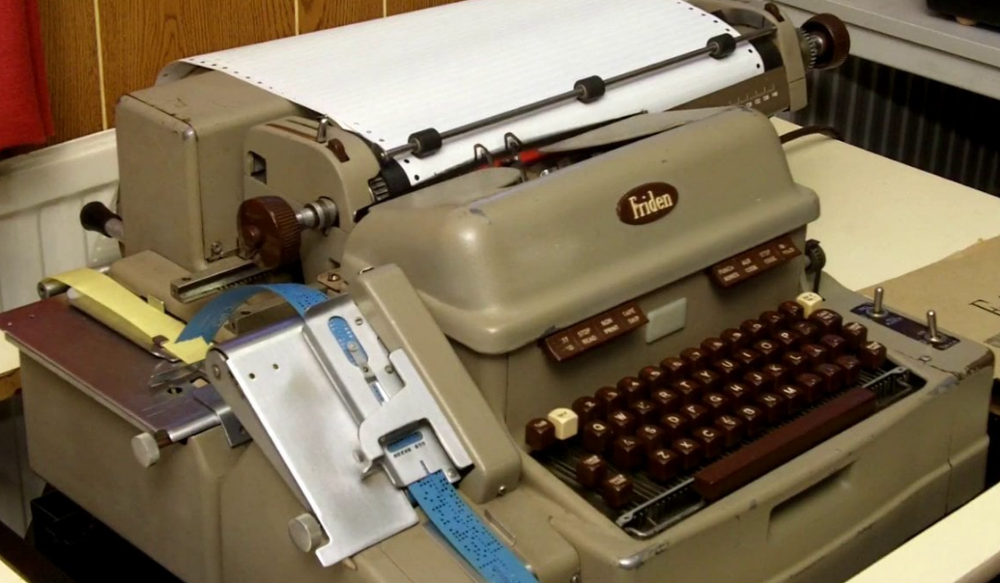
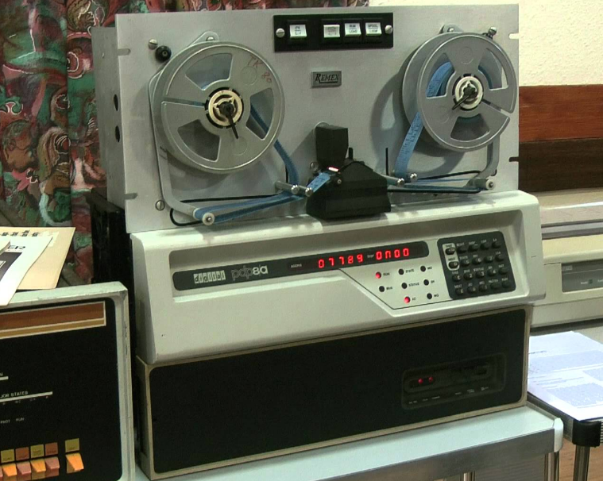
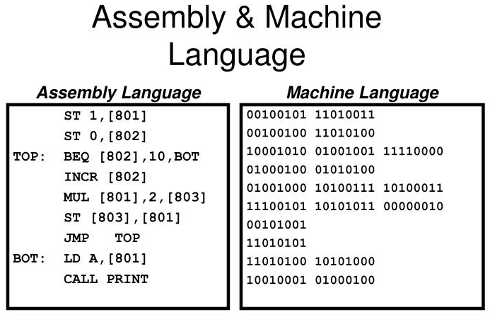
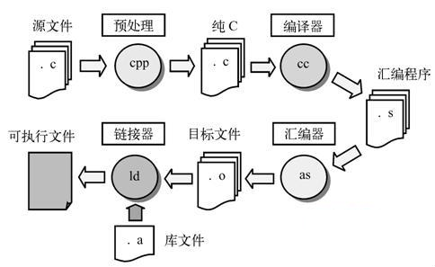

- 答疑时间：每周二下午7-8节（第四大节）
- 答疑地点：机电大楼，c418，电子封装教研室
- 考核方法：考试70%+平时30%
- 平时：课堂练习30%+平时课后作业40%+大作业30%
- 大作业：5-6人的小组共同完成相同题目，组长负责交作业
- 学习qq群：340389971 每天学习C，至少组长要加入
- 下一次课，要组好队，组长（提交手机号，qq号，学号姓名）把组员信息：学号、姓名填写好来抽题目
- 紧急联系方式：13737744076
第一章
程序设计和C语言
简要概述
1.1 什么是计算机程序
程序： 一组计算机能识别和执行的指令
1.2 什么是计算机语言
计算机能直接识别和接受的二进制代码称为机器指令（machine instruction）
机器指令的集合称为机器语言（machine language）
机器语言的优缺点：
- 运行速度快，能充分发挥机器的性能
- 难学，难写，难记，难检查和修改
- 不同机器的指令不同
1.2.1 机器语言
1.2.1 机器语言
1.2.1 机器语言
1.2.1 机器语言
1.2.2 汇编语言
符号语言（symbolic language）: 用一些英文字母（单词）和数字来表示一个指令。
计算机不能直接识别符号语言，必须经过编译器（compiler）编译（compile）为机器语言指令，计算机才能识别和运行。
因此，符号语言又称为汇编语言（assembler language）。
ADD A, B (将A寄存器中的数和B寄存器中的数相加，结果放回A中)
1.2.2 汇编语言
1.2.2 汇编语言
汇编语言的优缺点：
- 基本上和机器语言一一对应，所以依然运行速度快，能充分发挥机器的性能
- 比机器语言指令稍好记一点，但不好移植，不同机器不同指令
- 一些复杂算法不好实现，不适合编写大型的程序（人和机器的思维不同）
1.2.3 高级语言
高级语言（high level language）: 用人们习惯的自然语言和数学语言，一般不依赖具体的机器。
计算机不能直接识别高级语言，必须经过编译器（compiler）编译（compile）为机器语言指令，计算机才能识别和运行。
有时，编译好的机器语言代码还需要链接（link）其他的机器语言代码，组成最终的机器语言代码进行运行。
1.2.3 高级语言
高级语言例子：用参数方程绘制圆
angle = 0
radius = 50
while angle < 360 do :
x = radius * sin ( angle * PI / 180.0 )
y = radius * cos ( angle * PI / 180.0 )
plot ( x, y)
angle = angle + 10高级语言的优缺点：
- 不同机器上可以有不同的编译器编译为各自的机器语言指令，可移植性较好
- 可以一条语句编译为多条指令，编程效率高，也可以实现复杂算法和大型程序的组织
- 由于不是一一对应机器语言指令，编译不好的程序可能运行效率比较低
高级语言的种类
- 静态（编译）语言：在运行前先经过编译和链接转换为机器语言程序，如C, C++等
- 动态（编译）语言：在运行的时候边编译为机器语言指令边运行，也称为脚本语言， 如 javascript, python, ruby等
- 中间（编译）语言：在运行前先经过编译和链接转换为中间语言程序（字节码），在运行的时候才编译为机器语言运行，如java, C#等
1.3 C语言的发展及其特点
BCPL语言
1967年，英国剑桥大学 Martin Richards
GET "LIBHDR"
LET START() = VALOF $(
FOR I = 1 TO 5 DO
WRITEF("%N! = %I4*N", I, FACT(I))
RESULTIS 0
$)
AND FACT(N) = N = 0 -> 1, N * FACT(N - 1)B语言
1970年，美国AT&T Ken Thompson

printn(n, b) {
extrn putchar;
auto a;
if (a = n / b) /* assignment, not test for equality */
printn(a, b); /* recursive */
putchar(n % b + '0');
}
C语言
1972-1973年，美国AT&T Dennis Ritchie

#include <stdio.h>
int main(void)
{
printf("hello, world\n");
}开发C语言的目的：
- 提供多种数据类型并提供静态的检查
- 降低对平台的依赖，具有很好的移植性
C语言的应用和发展
- 1969, Ken Thompson 和 Dennis Ritchie 用汇编语言开发UNIX第一版
- 1973, Dennis Ritchie 发明C语言
- 1973, Ken Thompson 和 Dennis Ritchie 用C语言重写UNIX第五版（90%）
- 1978, C语言先后移植到大中小和微型机上
C 标准
- 1978年，在UNIX第7版的C语言编译程序为基础，Brian W. Kernighan 和 Dennis Ritchie, 《The C Programming Language》,"C圣经（Bible）" , K&R C
- 1989年, Brian W. Kernighan 和 Dennis Ritchie, 《The C Programming Language, 2nd》, ANSI89, ISO1990, C89
- 1999年, ISO1999, C99
- 2011年, ISO2011, C11
- 2017年, ISO2017, C17
- 20xx年, ISO20xx, C2x?
C 语言的特点
- 语言简洁紧凑，使用方便灵活
- 运算符丰富
- 数据类型丰富
- 有结构化的控制语句
- 语法限制不严格，设计自由度大
- 运行直接访问物理地址，位操作，实现汇编的绝大部分功能
- 可移植性好
- 生成目标代码质量高，程序执行效率高
C 语言的用途
- 操作系统（几乎所有，windows，Mac OS，Linux等）
- 要求性能高的程序，比如游戏，实时控制系统
- 嵌入式程序
1.4 简单的C语言程序浏览
1.4.1 最简单的C语言程序
例 1.1 要求在屏幕上输出一行信息
This is a C program.
#include < stdio.h > //预编译处理指令，包含stdio.h头文件
int main(void) //主函数定义
{ //函数开始
printf("This is a C program.\n"); //输出（到屏幕）信息
return 0; //函数返回值,注意每行语句结束用；
}运行结果：
This is a C program.
#include < stdio.h > //预编译处理指令，包含stdio.h头文件
int main(void) //主函数定义
{ //函数开始
printf("This is a C program.\n"); //输出（到屏幕）信息
return 0; //函数返回值,注意每行语句结束用；
}
1.C语言的基本组织单位是函数
2.每个独立C语言程序都有且只有一个
main函数，这是C语言程序的开始和结束
3.
#XXX表示这是预编译指令，是在C语言编译器开始之前进行的智能化文本处理， #include<stdio.h>表示将stdio.h文件的内容包含到本行中.
#include < stdio.h > //预编译处理指令，包含stdio.h头文件
int main(void) //主函数定义
{ //函数开始
printf("This is a C program.\n"); //输出（到屏幕）信息
return 0; //函数返回值,注意每行语句结束用；
}
4.int main(void)是函数头，main是函数的名称，前面的int表示该函数运行结束后应该有一个返回值，其类型是整数（int），void表示该函数（即main函数）被调用时无需传入参数
5.C语言中可以有很多函数，每个
函数的名称必须独一无二，每个函数都需要先定义再使用。函数的定义包括函数头和函数的实现，函数的实现由一对大括号{ }来包括.
#include < stdio.h > //预编译处理指令，包含stdio.h头文件
int main(void) //主函数定义
{ //函数开始
printf("This is a C program.\n"); //输出（到屏幕）信息
return 0; //函数返回值,注意每行语句结束用；
}
6.printf是一个C标准库函数，所谓标准库，是指每个C语言标准规定必须存在的很多函数的集合，编译器的实现厂商负责提供。printf函数负责将指定的信息显示到屏幕上
7.printf有很多用法，后面我们会看到更多。printf("xxx")是将文字串 xxx
（文字串又称为
字符串，string，在C语言中用" "来包括起来）显示在屏幕上
8.文字串（字符串）末尾的"\n"表示本行结束，后面再有文字输出的时候就换到下一行开头进行显示.
#include < stdio.h > //预编译处理指令，包含stdio.h头文件
int main(void) /*主函数定义 */
{ //函数开始
printf("This is a C program.\n"); //输出（到屏幕）信息
return 0; //函数返回值,注意每行语句结束用；
}
9.printf("xxx"); 称为一条语句，这是C语言的基本语法单位，每条语句末尾必须用；来结束（后面会介绍几种特殊的情况）
10.
return 0；表示函数（main）结束并以一个值（这里是0）返回到调用者（对于main函数来说，就是操作系统）
11.注释，两种注释方法：
//表示单行注释，从//开始到行尾都是注释，编译器自动忽略不编译，C99；另一种注释是/* ... */ 这样的块注释，K&R C, C89，C99都适合，注意/和*，*和/之间都不能有空格，这样的注释不能嵌套.
1.4.1 最简单的C语言程序
例 1.2 求两个整数之和
#include <stdio.h>
int main(void)
{
int a = 123, b, sum; //定义变量（及其类型）并给a一个初始值
b = 456; //给变量b赋值
sum = a + b; //计算a+b， 并把结果赋值给变量sum
printf(" %d + %d = %d \n", a, b, sum); //输出结果，注意格式化的输出
return 0; //返回函数最后结果
}#include <stdio.h>
int main(void)
{
int a = 123, b, sum; //定义变量（及其类型）并给a一个初始值
b = 456; //给变量b赋值
sum = a + b; //计算a+b， 并把结果赋值给变量sum
printf(" %d + %d = %d \n", a, b, sum); //输出结果，注意格式化的输出
return 0; //返回函数最后结果
}1. C语言中可以定义变量，变量有名称和类型，类型决定了变量能够保存的数据类型和大小，常见的类型有int(整数类型，简称整型, 如
123， +10086， -34 ， 0 , 012 , 0xf ）、
float（浮点类型，可以保存实数类型，如 1.45， 3.4e-3）、char（字符类型，可以保存字符等符号数据, 如'a', 'B', '+', '#', '1'）.
#include <stdio.h>
int main(void)
{
int a = 123, b, sum; //定义变量（及其类型）并给a一个初始值
b = 456; //给变量b赋值
sum = a + b; //计算a+b， 并把结果赋值给变量sum
printf(" %d + %d = %d \n", a, b, sum); //输出结果，注意格式化的输出
return 0; //返回函数最后结果
}2. 变量的名称不能随便乱取，首先其组成必须由字母（a-z, A-Z, 大小写是不同的）和数字（0-9）和下划线 _ 组成，而且
第一个字符不能是数字，比如 No1 是合法的变量名，而
1st 则是非法的; 变量取名不能和关键字（key word）重名，上面的int、float、 char、 return 都是关键字.
#include <stdio.h>
int main(void)
{
int a = 123, b, sum; //定义变量（及其类型）并给a一个初始值
b = 456; //给变量b赋值
sum = a + b; //计算a+b， 并把结果赋值给变量sum
printf(" %d + %d = %d \n", a, b, sum); //输出结果，注意格式化的输出
return 0; //返回函数最后结果
}3. 变量取名是为了方便使用，变量表示内存中的一块空间，可以往那块空间赋值不同的内容，因此变量的取名最好有意义，如本例的sum 变量就表示求和的意思。最常见的变量取名方法，用英文单词（或拼音）的组合，下划线区分各个单词，比如： user_name, ti_ji.
#include <stdio.h>
int main(void)
{
int a = 123, b, sum; //定义变量（及其类型）并给a一个初始值
b = 456; //给变量b赋值
sum = a + b; //计算a+b， 并把结果赋值给变量sum
printf(" %d + %d = %d \n", a, b, sum); //输出结果，注意格式化的输出
return 0; //返回函数最后结果
}4. 变量必须先定义再使用，定义时相同类型的变量可以放在一起定义，如：int a, b, sum; 定义也是语句，所以在行末要加； 变量定义的时候可以顺便
初始化，如果没有初始化，则其值不确定, 如：int a=123, b;.
#include <stdio.h>
int main(void)
{
int a = 123, b, sum; //定义变量（及其类型）并给a一个初始值
b = 456; //给变量b赋值
sum = a + b; //计算a+b， 并把结果赋值给变量sum
printf(" %d + %d = %d \n", a, b, sum); //输出结果，注意格式化的输出
return 0; //返回函数最后结果
}5. 变量定义之后就可以使用了，通常变量的常见使用方式是取其值（直接写出其变量名）和赋值（变量名=新的值）
6. sum = a + b 这是一条赋值表达式，右边是算数表达式，分别取变量a（指向的内存中）的值和b中的值，相加（加的时候会在内存中新申请一块区域保存运算结果，当赋值给sum以后，这块内存会归还给系统，所以
只计算不赋值则没有意义，浪费计算机的时间），左边是
赋值语句，将计算的结果数据放在变量sum所表示的那块内存中.
#include <stdio.h>
int main(void)
{
int a = 123, b, sum; //定义变量（及其类型）并给a一个初始值
b = 456; //给变量b赋值
sum = a + b; //计算a+b， 并把结果赋值给变量sum
printf(" %d + %d = %d \n", a, b, sum); //输出结果，注意格式化的输出
return 0; //返回函数最后结果
}7. printf可以一种嵌入式的方法来将数值嵌入一段字符串中输出，如 printf("%d+%d=%d\n", a, b, a+b); 语句中，前面的“ ”包含的字符串称为格式字符串，在格式字符串中出现的%d称为
嵌入字符，
以%为开头，d表示整数，每次出现一个%d，就表示实际输出时，这个%d应该由格式字符串后面的数或变量或表达式的值来替换，第一个%d由a的值来替换，第二个%d由b的值来替换，第三个%d由表达式(a+b)的计算结果的值来替换，所以当a
= 123, b=456 的时候， "%d+%d=%d"就被替换为 123 + 456 = 579 输出到屏幕上.
1.4.1 最简单的C语言程序
例 1.3 输入两个数，求其大者输出。
#include < stdio.h >
int main(void)
{
float x, y, max; //定义变量（及其类型）
float max2(float a, float b); //给函数声明（declaration)
printf("please input two number:"); //显示提示信息
scanf("%f,%f", &x, &y); //从键盘中输入两个数
max = max2(x, y); //调用函数（call）来计算哪个大，返回结果赋值给max
printf(" max number between [%f,%f] = %f \n", x, y, max); //输出结果，注意格式化的输出
return 0; //返回函数最后结果
}
float max2(float a, float b)
{
float z;
if( a > b )
z = a;
else
z = b;
return z;
}#include < stdio.h >
int main(void)
{
float x, y, max; //定义变量（及其类型）
float max2(float a, float b); //给函数声明（declaration)
printf("please input two number:"); //显示提示信息
scanf("%f,%f", &x, &y); //从键盘中输入两个数
max = max2(x, y); //调用函数（call）来计算哪个大，返回结果赋值给max
printf(" max number between [%f,%f] = %f \n", x, y, max); //输出结果，注意格式化的输出
return 0; //返回函数最后结果
}
float max2(float a, float b)
{
float z;
if( a > b )
z = a;
else
z = b;
return z;
}1. 本例定义和使用一个函数，注意函数和变量一样，必须先定义再使用，如果在使用之后定义，必须在之前先声明。
2. 函数的定义必须包含函数头以及函数体，函数的
声明则是只包含函数头，注意函数声明也是语句，所以行末必须加；
3. 函数定义只能定义一次，但是声明可以无数次。
#include < stdio.h >
int main(void)
{
float x, y, max; //定义变量（及其类型）
float max2(float a, float b); //给函数声明（declaration)
printf("please input two number:"); //显示提示信息
scanf("%f,%f", &x, &y); //从键盘中输入两个数
max = max2(x, y); //调用函数（call）来计算哪个大，返回结果赋值给max
printf(" max number between [%f,%f] = %f \n", x, y, max); //输出结果，注意格式化的输出
return 0; //返回函数最后结果
}
float max2(float a, float b)
{
float z;
if( a > b )
z = a;
else
z = b;
return z;
} 4. 函数头的参数列表必须把每个参数的类型和名称都写上，用，来分隔，如果没有参数，则标记为void, 如 ： int main(void)
5. 函数的返回值类型说明放在函数头最左边，如上面的函数max2其返回值类型是float（浮点实数类型），如果函数
没有返回值，则标记为void ，如：void do_something(void)
6. 函数的返回值由函数中的return 语句来决定，可以有多个return 语句，如果没有返回值，可以简单用 return; 来结束.
#include < stdio.h >
int main(void)
{
float x, y, max; //定义变量（及其类型）
float max2(float a, float b); //给函数声明（declaration)
printf("please input two number:"); //显示提示信息
scanf("%f,%f", &x, &y); //从键盘中输入两个数
max = max2(x, y); //调用函数（call）来计算哪个大，返回结果赋值给max
printf(" max number between [%f,%f] = %f \n", x, y, max); //输出结果，注意格式化的输出
return 0; //返回函数最后结果
}
float max2(float a, float b)
{
float z;
if( a > b )
z = a;
else
z = b;
return z;
} 7. 函数的名称定义规则和变量名一致，只能字母（大小写不同）、数字、下划线组成，而且数字不能是第一个字符，不能和关键字重名，最好用有意义的英文单词或者拼音组合来起名，多个单词之间用下划线来分开，比如：do_something(), qiu_ti_ji().
8. 函数定义完之后就可以被其他语句调用（call），函数在实际被调用的时候，直接写函数名，并通过括号输入实际的参数的值，这个时候参数不要指定类型。例如：定义函数:
float max2(float a, float b){...} 调用函数：
max= max2(13, 56);注意在这个例子中，实际调用函数max2时，13这个数会传递到函数max2中，并赋值给参数a, 56这个数会传递到函数max2中，赋值给参数b
#include < stdio.h >
int main(void)
{
float x, y, max; //定义变量（及其类型）
float max2(float a, float b); //给函数声明（declaration)
printf("please input two number:"); //显示提示信息
scanf("%f,%f", &x, &y); //从键盘中输入两个数
max = max2(x, y); //调用函数（call）来计算哪个大，返回结果赋值给max
printf(" max number between [%f,%f] = %f \n", x, y, max); //输出结果，注意格式化的输出
return 0; //返回函数最后结果
} 9. 在本例中，为了能输入和比较实数，我们使用了浮点类型：float 来定义变量，float类型能表示的实数可以有两种形式：小数形式（如 3.14, 0.314, -.314 ) 和 科学计数法形式 (如
0.314e+1, 31.4e-1 )， 更多float类型的信息见后继课程.
10. 为了能够从键盘中输入数据给变量，我们使用了标准库函数scanf（和printf一样，也在stdio.h中声明）
11. scanf("%f,%f", &x, &y); 这条语句有两个注意的地方，一个是格式字符串“%f,%f", 这说明
对于float类型的变量，其嵌入字符应该是%f(前面的int类型的变量是%d), 另一个要注意的，是
&x中的&， &称为取地址运算符，能告诉scanf函数当从键盘输入数据后，应该放置到
x变量在内存中的地址上。
12. 在后面的printf("%f",x) 中，同样使用%f嵌入字符来对应float类型的变量x.
float max2(float a, float b)
{
float z;
if( a > b )
z = a;
else
z = b;
return z;
}13. 在函数max2中，我们用了
if (zzz) xxx; else yyy; 的语法，这是一种常见的
条件判断语句，当zzz被计算后，如果其值为真（true，对于C语言来说，就是任何非0的值，都为真），则执行xxx语句，若zzz计算的结果为
假（false，对于C语言，0为假），则执行yyy语句，更多条件判断的内容见后面的介绍。
1.4.2 C语言的程序结构
(1)、一个程序由一个或多个源程序文件组成（以.c为扩展名），一个源程序文件中可以包含三个部分：
#include < stdio.h >
float x, y, max; //定义变量（及其类型）
float max2(float a, float b); //给函数声明（declaration)
int main(void)
{
printf("please input two number:"); //显示提示信息
scanf("%f,%f", &x, &y); //从键盘中输入两个数
max = max2(x, y); //调用函数（call）来计算哪个大，返回结果赋值给max
printf(" max number between [%f,%f] = %f \n", x, y, max); //输出结果，注意格式化的输出
return 0; //返回函数最后结果
}
float max2(float a, float b)
{
float z;
if( a > b )
z = a;
else
z = b;
return z;
}预处理指令 全局声明 函数定义
(2)、函数是C语言的主要组成部分
- 由一个或多个函数组成（必须且只能有一个
main函数） - 多个函数可以分在多个源程序文件中
- 编译（compile）是以源程序文件为对象，最后链接（link）成为一个二进制可执行的程序
- 模块化的程序设计
- 函数可以是自己写的，也可以是标准库中，或者其他人/公司提供的
(3)、函数包括两个部分：
- 函数头（首）
- 函数体
- 声明部分
- 执行部分
float max2(float a, float b) //函数头
{ //函数体开始
float z; //声明部分
if( a > b ) //执行部分
z = a;
else
z = b;
return z;
} //函数体结束(4). 函数总是从main函数开始执行
(5). 对计算机的操作是由函数中的C语句完成的
- 可以一行写多条C语句，用
;来区分 - 一般建议一行只写一条，方便阅读和调试
（6）C语言中输入输出都是由标准库函数来实现的
（7）程序中应该包含注释
1.5 运行C程序的步骤和方法
- 上机输入和编辑源程序
- 编译（compile）
- 预处理
- 检查语法错误
- 编译成目标文件（object，机器语言的二进制文件）
- 链接（link）
- 运行，检查是否有逻辑或算法错误
1.6 程序设计的任务
- 问题分析，建立模型，确定输入和输出
- 设计算法
- 编写程序
- 对源程序进行编辑、编译和链接
- 运行程序，分析结果
- 编写程序文档
练习
5. 编写程序，输出下面的内容：
**********************************
Very good!
**********************************
参考答案
#include<stdio.h>
int main(void)
{
printf("**********************************\n");
printf("Very good!\n");
printf("**********************************\n");
return 0;
}6. 编写一个C程序，输入a,b,c三个浮点数，输出最大值。
[解题思路]：设计一个求两个最大浮点数的最大值的函数 max_float_2(a,b), 则求三个数最大值的算法就是 max_float_2(a, max_float_2(b,c))
#include<stdio.h>
int main(void)
{
float max_float_2(float x, float y);
float a, b, c, result;
printf("Input 3 float number:");
scanf("%f,%f,%f", &a, &b, &c);
result = max_float_2(a, max_float_2(b,c));
printf("The max number is %f\n", result);
return 0;
}
float max_float_2(float x, float y)
{
if( x > y )
return x;
else
return y;
}